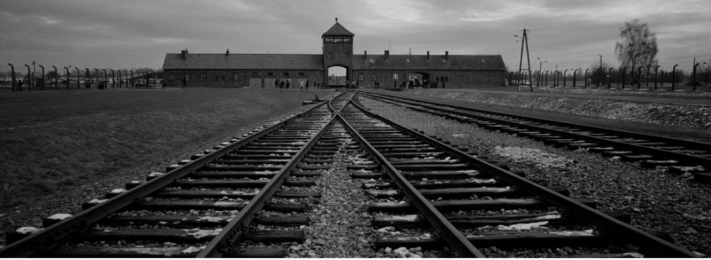

La Shoah désigne le génocide des Juifs d’Europe commis par l’Allemagne nazie entre 1941 et 1945. Plus de six millions d’hommes, de femmes et d’enfants ont été assassinés en raison de leur origine ou de leur identité. Ce crime est l’un des plus documentés et des plus étudiés de l’histoire moderne.
Le terme « Shoah » signifie « catastrophe » en hébreu. Il est utilisé pour exprimer la dimension unique, irréductible et profondément humaine de cet événement.
L’antisémitisme nazi repose sur une idéologie raciale qui considère les Juifs comme une « menace » pour l’Allemagne. Dès 1933, le régime met en place des lois discriminatoires, exclut les Juifs de la vie publique et encourage les violences.
Les lois de Nuremberg (1935) retirent aux Juifs leurs droits civiques et organisent leur ségrégation. La propagande diffuse des discours de haine qui préparent la population à accepter des mesures de plus en plus radicales.
Avant même la guerre, les Juifs sont progressivement exclus de la société : interdiction de travailler, confiscation des biens, interdiction d’exercer certains métiers, fermeture des écoles juives. La « Nuit de Cristal » (1938) marque une explosion de violences contre les synagogues, les commerces et les familles.
À partir de 1939, les Juifs sont regroupés dans des ghettos surpeuplés en Europe de l’Est, où les conditions de vie sont extrêmement difficiles.
En 1941, après l’invasion de l’Union soviétique, les nazis passent à une politique d’extermination systématique. Des unités mobiles tuent des centaines de milliers de personnes dans les territoires occupés.
Cette violence conduit à la mise en place d’un système industriel de mise à mort, organisé autour de centres d’extermination spécialement conçus pour tuer à grande échelle.
Plusieurs lieux sont construits pour assassiner les Juifs d’Europe : Auschwitz-Birkenau, Treblinka, Sobibor, Belzec, Chelmno et Majdanek. Ces sites sont au cœur de la « Solution finale », nom donné par les nazis à leur projet d’extermination.
Les victimes sont déportées depuis toute l’Europe dans des convois. La plupart sont tuées dès leur arrivée. Les rares survivants témoignent aujourd’hui de ce système d’une brutalité extrême.
Malgré les risques, des milliers de personnes ont tenté de sauver des Juifs : familles, voisins, diplomates, religieux, résistants. Certains pays ont protégé leurs citoyens juifs, d’autres ont refusé de collaborer aux déportations.
Ces actes de courage sont aujourd’hui reconnus par le titre de « Juste parmi les Nations », décerné par Yad Vashem.
Plus de six millions de Juifs ont été assassinés. Des communautés entières ont disparu. La Shoah a profondément marqué l’histoire du XXe siècle et continue d’influencer la mémoire collective, la justice internationale et la lutte contre le racisme.
Après la guerre, les survivants ont témoigné pour que le monde comprenne l’ampleur du crime. Les procès de Nuremberg ont établi les responsabilités des dirigeants nazis et posé les bases du droit international moderne.
Aujourd’hui, la Shoah est étudiée dans les écoles, commémorée dans les musées et rappelée lors de journées de mémoire. Transmettre cette histoire est essentiel pour prévenir les dérives autoritaires et combattre la haine.